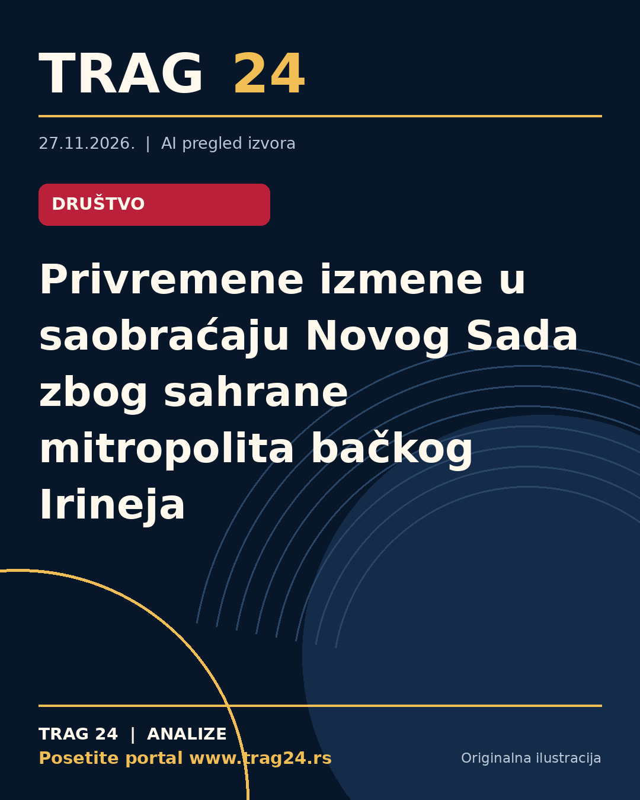

Privremene izmene u saobraćaju Novog Sada zbog sahrane mitropolita bačkog Irineja

Šta se dogodilo
U Novom Sadu su zbog opela i sahrane mitropolita bačkog Irineja uvedene privremene izmene režima saobraćaja. Mitropolit Irinej preminuo je 24. novembra 2026. godine u 79. godini na Institutu za onkologiju Vojvodine u Sremskoj Kamenici, nakon višedecenijske službe u Srpskoj pravoslavnoj crkvi i Eparhiji bačkoj.
Hronologija
Opelo povodom smrti mitropolita održano je u Hramu Sveta Tri Jerarha u Novom Sadu sa početkom u 9.00 časova, dok je opelo planirano za 12.00 časova, koje je služio patrijarh srpski Porfirije u prisustvu arhijereja i predstavnika drugih pravoslavnih crkava. Nakon opela usledila je litijska povorka, a sam čin sahrane izveden je u kripti Sabornog hrama Svetog velikomučenika Georgija u Novom Sadu. Privremena obustava saobraćaja u ulicama Almaškoj, Koče Kolarova i Tekelijinoj planirana je od 7.00 do 15.00 časova u petak, 27. novembra 2026. Pripadnici saobraćajne policije regulišu saobraćaj u zoni obustave.
Šta navode izvori
Kako navodi Kurir, liturgiju i opelo su služili visoki crkveni zvaničnici, uključujući patrijarha Porfirija, uz prisustvo velikog broja vernika. Euronews navodi da je pomen održan i u hramu Podvorja Srpske pravoslavne crkve u Moskvi, gde su učestvovali arhijereji i članovi sveštene pratnje patrijarha. Izvor takođe ističe da je odlazak mitropolita Irineja ocenjen kao nenadoknadiv gubitak za SPC i srpski narod.
Šta je potvrđeno
Potvrđeno je da je zbog sahrane uvedena privremena obustava saobraćaja u određenim ulicama Novog Sada, kao i da je mitropolit Irinej preminuo 24. novembra 2026. u Vojvodini. Takođe je potvrđeno da je opelo održano u skladu sa crkvenim običajima uz prisustvo patrijarha i drugih crkvenih dužnosnika, a sahrana je obavljena u kripti Sabornog hrama u Novom Sadu.
Šta nije potvrđeno
Nema potvrda o daljim promenama u saobraćaju van već pomenutih ulica i vremenskog okvira. Takođe, nema nezavisnih izvora koji bi detaljnije opisali organizaciju sahrane ili prisustvo drugih državnih ili crkvenih zvaničnika osim navedene informacije o patrijarhu Porfiriju i arhijerejima.
Šta ostaje otvoreno
Ostaje nepoznato koliko je trajala litijska povorka i kakve su bile konkretne mere bezbednosti tokom ceremonije osim regulacije saobraćaja. Takođe, nema detaljnijih informacija o eventualnom uticaju sahrane na druge aspekte gradskog života ili saobraćaj u širem području Novog Sada.
Izvori
- https://www.euronews.rs/srbija/drustvo/253840/sahrana-mitropolita-irineja-menja-saobracaj-u-novom-sadu/vest
- https://www.kurir.rs/vesti/srbija/10173925/izmena-rezima-saobracaja-u-novom-sadu-zbog-sahrane-mitropolita-backog-irineja
Ova analiza je pripremljena uz pomoć veštačke inteligencije na osnovu javno dostupnih izvora. Navodi izvora nisu nužno nezavisno potvrđeni.